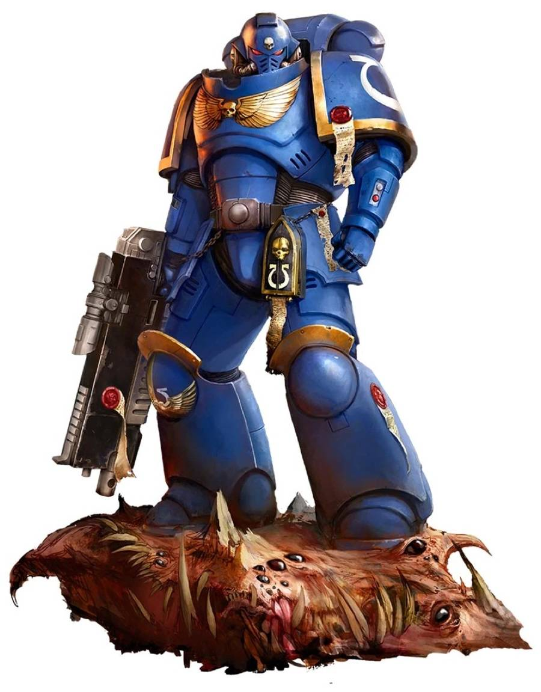
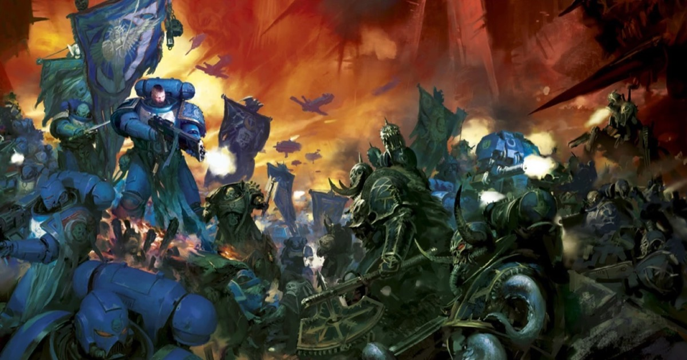

Primaris Space Marines
| Primaris Space Marines | |
|---|---|
| Part of the Adeptus Astartes | |
 A Primaris Space Marine of the Ultramarines in Mark X Tacticus armour Artwork © Games Workshop | |
| Creator | Belisarius Cawl, Archmagos Dominus of Mars |
| Ordered by | Roboute Guilliman, c. 021.M31 |
| Ultima Founding | 999.M41, woken from stasis on Mars |
| Gene-seed organs | 22 (the nineteen of the Firstborn and three more) |
| Stature | Eight to nearly ten feet in armour |
| Armour | Mark X power armour: Tacticus, Gravis and Phobos patterns |
| Notable Chapters | Rift Stalkers, Silver Templars, Umbral Knights |
| Known for | Reinforcing the First Founding Chapters; the Indomitus Crusade; the Rubicon Primaris |
The Primaris Space Marines are a generation of Adeptus Astartes designed by the Archmagos Dominus Belisarius Cawl of Mars, whose creation was begun on the orders of Roboute Guilliman in the days after the Second Founding, and whose awakening in 999.M41 is called the Ultima Founding. They are larger than earlier Space Marines, who are called the Firstborn by contrast. They are also stronger, faster to react and more resilient, and have twenty-two gene-seed organs instead of nineteen. They are the tool by which the Lord Commander has reinforced the Chapters of the Imperium in the Era Indomitus, either as new recruits for existing Chapters or as the whole strength of new ones.[1][2]
In ten thousand years of work, Cawl made a Space Marine that is physically better than the Emperor's own work. He did not make one that is perfect, and the Imperium has paid for the new warriors in disputes with the Chapters that distrust Mars and with the Inquisition, which regards such work as a risk. Within a generation the Primaris warriors have become the standard of the Adeptus Astartes, and the Firstborn of many Chapters have chosen to take the risk of crossing the Rubicon Primaris to become what they are.[3]
Origins
[edit]The task set to Cawl
[edit]After the Horus Heresy and the Second Founding, the Lord Commander Roboute Guilliman, then the first Regent of the Imperium, gave the Archmagos Belisarius Cawl two tasks. The first was to preserve the Armour of Fate, a suit of artificer armour that would keep him alive if he should be mortally wounded. The second was to make a new body of transhuman warriors. As an optimist, but not a fool, Guilliman had learned from the mistakes of the Heresy. He foresaw that the powers of Chaos would never rest, and that a day would come when warriors of a higher order would be needed.[1]
Cawl used as his starting point the genetic template of the Space Marines made by the Emperor for the Great Crusade. He had access to a device called the Sangprimus Portum, which contained genetic material of the primarchs themselves, and to a store of living candidates held in stasis beneath the surface of Mars. Cawl had a store of knowledge from his merger of minds, in the early days of the Heresy, with the geneticist Ezekiel Sedayne, the second director of the Biotechnical Division. With these he spent ten thousand years on the work. Meanwhile Guilliman was wounded at Thessala in 121.M31 and laid in stasis in the Temple of Correction on Macragge, and could neither guide nor restrain it. Cawl interpreted his orders as he saw fit, and the secrets of the new organs were not given to the Imperium until the end of the 41st millennium.[1]
The raw material
[edit]The candidates for the Ultima Founding were taken from the men of Terra, in the generations soon after the creation of the first Legions. For the Crimson Fists, for example, Cawl took warriors who were closest to the genetic line of Rogal Dorn, and some of these, when they were woken, remembered having seen the primarch. Some of the Primaris Marines had been in stasis since the Great Crusade. Cawl collected samples of the genomes of all twenty primarchs, including the Traitors and the Lost, but Guilliman forbade him to use any but those of the nine loyalist Legions. Cawl argued that there was nothing wrong with the gene-seed of the others, that the fault was in their primarchs, and that their variety would strengthen the Primaris. Guilliman refused, and ordered him to go no further, although he knew that Cawl would probably do so in secret.[1][2]
Physiology
[edit]
A Primaris Space Marine is from eight to almost ten feet tall in his armour. He has all nineteen of the organs given to the first Astartes, and three more. They are implanted between the Biscopea and the Haemastamen, steps three and four of the usual schedule, in two stages called the Primaris Alpha and Beta phases, which can be done at the same time.[4]
- The Sinew Coils, called the Steel Within: durametallic cables that sheath the sinews and contract with great force, adding to strength and giving another layer of protection. A Primaris Marine can crush a man's skull in his hand or break flak armour to splinters.
- The Magnificat, the Amplifier: a small lobe set in the cortex of the brain, which makes hormones that increase growth and intensify the other implants, in particular the Biscopea and the Ossmodula. It is half of the dual-valve organ the Emperor made for his primarchs, the Immortis Gland. Cawl could find the materials and plans to build only the right half, the Dextrophic Lobe. The plans of the left half, the Sintarius, had been wiped from the records of the Primarch Project, by the Emperor or by some other hand. Cawl could not tell which.
- The Belisarian Furnace, the Revitaliser: a dormant organ joined to both hearts, which in great stress or after violent trauma releases a flood of self-made chemicals that act as combat stimulants and speed the regrowth of tissue. It then goes dormant, and takes time to build up again.
The gene-seed of the Primaris is also stabler than that of the Firstborn. The Mechanicus estimates a chance of one part in a hundred thousand that a generation will deviate from the baseline, and it is said to be nearly immune to the instability that afflicts Chapters such as the Blood Angels and the Space Wolves. That has not been confirmed in the experience of those Chapters, for the Blood Angels' Rage and Thirst have continued in the Primaris of the Chapter, and the Imperial Inquisition regards the claim as unproven.[4][3]
The Ultima Founding
[edit]When Guilliman reached Terra in the Terran Crusade and returned to his task, he ordered the fruit of Cawl's labour to be released. The first Primaris Marines, the Awoken, came out of ten thousand years of stasis with their training already in their minds. Each of them was indoctrinated for a single strategic role: some were Intercessors, some Aggressors, and almost all were fitted to one duty only. They could fight at once, with the skill of veterans, and had a little extra skill in handling the machine spirits of Mars. They lacked the experience of Marines who had risen through the companies of a Chapter, and were in this respect inflexible.[4]
The Unnumbered Sons
[edit]About half of the Primaris Marines of the Ultima Founding were made into new Chapters, among them the Rift Stalkers and the Silver Templars. The rest were formed into nine Legion-sized armies, named for the nine loyalist primarchs, and called the Unnumbered Sons of the Primarchs, or, among themselves, the Greyshields. Guilliman made them fight in squads of mixed gene-line, to build cooperation between the gene-lines. They served as his reserve in the Indomitus Crusade, and were worn down by attrition and by the need to reinforce the existing Chapters. By the end of the first phase of the crusade, at the Battle of Raukos, there were about twenty thousand left. They were disbanded and made into a last group of new Primaris Chapters, before the Lord Commander intervened in the Plague Wars.[4][5]
New Chapters
[edit]The new Chapters trace their descent to the gene-seed of the First Founding, and have a Chapter Master chosen from among their own, and the full heraldry and equipment of a Codex Chapter. Many were given homeworlds on the edge of the Great Rift, the new front line against Chaos. Some took over the empty fortress-monasteries of Chapters lost to attrition. Newly founded Chapters of the Ultima Founding include the Rift Stalkers, the Silver Templars and the Umbral Knights. Some Chapters believed to be extinct were reborn by the Primaris Marines: the Soul Drinkers, for example, and the Angels Revenant, who were refounded on the ruins of their homeworld Libethra.[5]
Reception in the Chapters
[edit]Guilliman, in the Indomitus Crusade, gave the Primaris Marines to Chapters in need. Those that had been most devastated by the wars were reinforced first, beginning with the Ultramarines. Many Chapter Masters welcomed them. Others saw them with suspicion or open hostility, and some held that the Emperor's work should never have been touched by mortals. The Chapters of the Dark Angels, the Space Wolves and the Mortifactors, which are secretive by culture, resented the presence of the Martian magi who came with them, and the Dark Angels in particular kept them under watch and sought to learn their craft to dispense with them.[4]
To meet the resistance, the Torchbearer task forces took with them detachments of the Adeptus Custodes, the Emissaries Imperatus, who stated that the gift of the Primaris Marines was the will of the Emperor. Under the name of the Heralds of the Golden Throne, they accompanied the crusade, many of them flying as Vertus Praetors to deliver messages to the Space Marines. No Chapter Master refused a gift from the Emperor's own guard. The Chapters with a Firstborn tradition were afraid that the Primaris would replace them, or that the identity of a Chapter would be diluted by thousands of recruits from Mars, and felt it as a wound to see the new warriors in their heraldry. The Primaris Marines, for their part, had been put in brotherhoods which others had given their lives to enter, and were welcome in some as brothers separated at birth.[5][2]
The Rubicon Primaris
[edit]The Primaris organs were first implanted in the Firstborn by a process called crossing the Rubicon Primaris. The question had been raised in every Chapter: could a Firstborn who had not been made Primaris be changed without losing his experience? The Mechanicus's data predicted a failure rate of 61.6 per cent until the procedure was improved. For some Chapters this was a sufficient reason to refuse. The Ultramarines decided that the debate must be resolved in practice, and Marneus Calgar offered himself as the first subject.[4]
The operation took place in an auto-sterilised medical vault, on a marble slab cut with runnels for the blood. Calgar was opened from crown to heel and his ribcage was cracked, and at the climax of the surgery his body was suppressed to the point at which his life slipped away. Choirs of cyber-cherubs sang requiems around the corpse, and for ten minutes and then twenty it lay open to the air while the surgeons worked. Then, with his hearts restarted and his wounds closed, he came back to life with a roar, and the Belisarian Furnace brought him at once to battle readiness. The Ultramarines call the process the Calgarian Rites. Other Chapters make their own claim to have been first: the White Scars say that it was Kor'sarro Khan, their Master of the Hunt.[4]
Many Firstborn have since crossed the Rubicon. Among the ascended are Marneus Calgar, the Librarian Varro Tigurius, Uriel Ventris and Demetrian Titus of the Ultramarines, Kayvaan Shrike of the Raven Guard, Adrax Agatone of the Salamanders, Tor Garadon of the Imperial Fists, Azrael, Belial and Asmodai of the Dark Angels, Dante and Mephiston of the Blood Angels, Ragnar Blackmane of the Space Wolves and Helbrecht and Grimaldus of the Black Templars. Some have died in the attempt, and the Chapters that lost brothers speak of them as martyrs.[4]
Routes to becoming Primaris
[edit]The Imperial records distinguish four classes of the Primaris, according to the way they came into being.
- The Awoken: those of the Ultima Founding, woken from stasis on Mars.
- The Indoctrinated: neophytes raised by the Chapters themselves. The fleets of the Indomitus Crusade included Genetor acolytes of the Mechanicus who joined each Chapter's Apothecarion with their machines. The Torchbearers carried the "Primarch's Gift" of the genetic arts. Some Chapters implant all of their aspirants with the Primaris organs, others only a part. Those so raised have the full career of their Chapter and its culture and are said to combine the strength of the Primaris with the tactical flexibility of the Firstborn.
- The Ascended: Firstborn who have crossed the Rubicon.
- The Firstborn: those who have not, who continue to serve in large numbers beside their Primaris brothers.
Wargear
[edit]The Ultima Founding was accompanied by a new panoply made on Mars at Cawl's direction. The Mark X power armour combines the best features of the ancient patterns of the Heresy with later developments, and is made in the Tacticus pattern for the line, the Gravis pattern for heavy troops and the Phobos pattern for scouts and infiltrators. The Mark II Cawl Pattern bolt rifle is a perfected form of the archetypal Astartes weapon, and the Mark III Belisarius Pattern plasma incinerator is a refined plasma gun. New vehicles include the Redemptor Dreadnought, the Overlord gunship and the Repulsor grav-tank. In the field, Primaris Marines fight as Intercessors, Hellblasters, Inceptors, Aggressors, Reivers, Eliminators and in other roles, as well as in the specialist machines of the Armoury.[4][1]
Organisation
[edit]The revision of the Codex Astartes ordered by Guilliman after his return keeps the Chapter at a thousand battle-brothers in ten companies. Each company is still a hundred warriors under a captain, who now often has two lieutenants, but a company may have up to twenty squads of five. A Battle Company can be reinforced from the Reserve Companies, which may take it above a hundred men. The first company is the Veterans, in Terminator armour, with Intercessors and Vanguard squads as a part. The second to fifth are Battle Companies, each of at least six battleline squads, two close support squads and two fire support squads. The sixth and seventh are battleline reserves, and the eighth and ninth are close support and fire support. The tenth is the Scouts and the Vanguard. The Armoury maintains the armoured vehicles, among them Rhinos, Razorbacks, Repulsors and Land Raiders, and the Primaris Dreadnoughts. The Chapter Command contains the Librarius, Reclusium, Apothecarion and Armoury.[4]
The assignment of Primaris Marines to the old Chapters has changed the balance of the Adeptus Astartes. Accusations of "Legion building" are made against Chapters that have grown rapidly, and the Dark Angels in particular are suspected by the Inquisition for this reason. The supporters of the Chapters argue that a strong Astartes force is a necessary counterweight to the growing political power of Ultramar.[3]
Assessment
[edit]The Primaris Marines are generally regarded as a success. They are the reason that the Chapters have been able to fight in so many places at once, and their gene-seed, though not yet shown to be free of the old flaws, has not yet shown any new ones. The practice of the Chapters since the Indomitus Crusade has been to treat Primaris and Firstborn as one force, and the distinction between them is often not made in the field. The worry of the Inquisition and of conservative Chapters is that the Primaris are one more work of Cawl, of whom the Mechanicus is suspicious, and that if he has misjudged the gene-seed, the harm will not be seen for generations.[3]
Timeline
[edit]The principal dated events of the Primaris project, from its commission to the reform of the Chapters.
| Date | Event | Theatre |
|---|---|---|
| c. 021.M31 | Roboute Guilliman commissions the Mechanicum to create a new generation of Space Marines. | Macragge |
| 121.M31 | Guilliman is wounded by Fulgrim at Thessala and laid in stasis at Macragge. | Thessala |
| c. 021–999.M41 | Belisarius Cawl works in secret on the project in the vaults beneath Mars for ten thousand years. | Mars |
| 999.M41 | The Thirteenth Black Crusade takes Cadia; Guilliman resolves to release the Primaris. | Cadia |
| 999.M41 | The first Primaris Marines, the Awoken, are woken from stasis on Mars. | Mars |
| 999.M41 | The Indomitus Crusade leaves the Sol System with the Zar-Quaesitor. | Sol System |
| 999.M41 | The crusade arrives at Baal during the Devastation of Baal. | Baal |
| c. 012.M42 | The first phase of the crusade ends at the Battle of Raukos; the Unnumbered Sons are disbanded into new Chapters. | Raukos |
| M42 | Marneus Calgar undergoes the Rubicon Primaris process, the first of the Firstborn to do so.[a] | Macragge |
| M42 | Guilliman intervenes in the Plague Wars with Primaris reinforcements.[b] | Ultramar |
| M42 | The Codex Astartes is revised, setting the Chapter at a thousand battle-brothers in ten companies.[c] | Macragge |
| M42 | The Primaris Marines are given to the Chapters most devastated by the wars, beginning with the Ultramarines.[d] | Indomitus Crusade |
See also
[edit]Notes
[edit]References
[edit]- ^ a b c d e Codex: Space Marines (9th Edition), pg. 59. Games Workshop. Codex: Space Marines (9th Edition), pg. 7. Games Workshop.
- ^ a b c Codex: Space Wolves (9th Edition), pg. 23. Games Workshop. Haley, Guy. Dark Imperium (novel). Black Library, Chs. 6, 7, 12, 13, 15, 18, 20.
- ^ a b c d Dembski-Bowden, Aaron. Spear of the Emperor (novel). Black Library, Ch. 20. Counter, Ben. Traitor by Deed (novella). Black Library, Ch. 1, Cover (Illustration).
- ^ a b c d e f g h i j Codex Adeptus Astartes - Blood Angels (8th Edition), pp. 16, 19. Games Workshop. Codex Adepus Astartes - Dark Angels (8th Edition), pp. 15, 18-19. Games Workshop.
- ^ a b c Codex Adeptus Astartes - Space Marines (8th Edition), pp. 10-12, 14, 20-21, 68-82. Games Workshop. Codex: Adeptus Custodes (8th Edition), pg. 27, 32. Games Workshop.